HYD · 실습 가이드Cypher로 그래프를 만들고 수정·삭제한 뒤 설비 탐색하기
연결된 대상을 확인하고, 결과의 근거를 원자료와 대조합니다.
01 예제 준비하기
VS Code 터미널에서 실행하세요.
python prepare_example.py
예제 준비 완료: 노드 20개 · 관계 19개가 표시됩니다. 이 예제는 HYD-01 한 대의 설비 구성입니다.
python lab_db.py
열린 연결 창의 Protocol이 bolt://이고 Connection URL이 터미널의 현재 주소와 같은지 확인하세요. Database user는 neo4j, Password는 비워 두고 Connect를 누릅니다. 주소가 비어 있다면 터미널의 127.0.0.1:포트 값을 넣으세요.
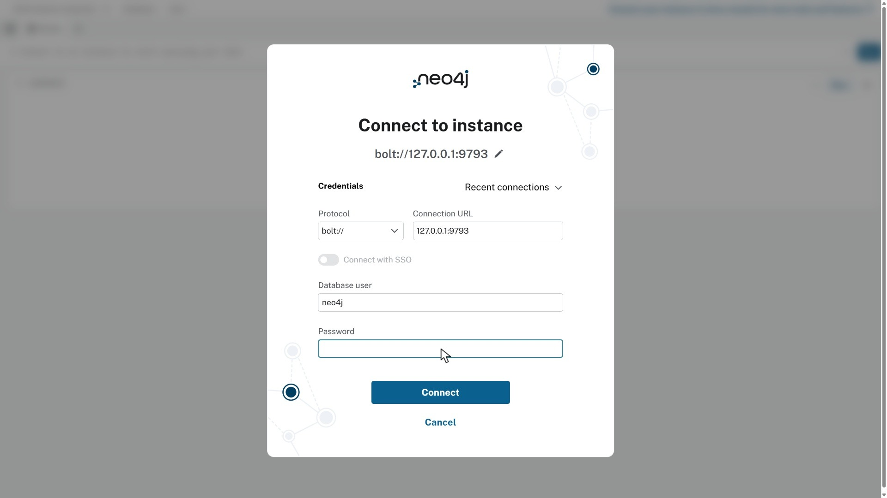
실습 링크를 열면 나타나는 연결 창. 주소는 자신의 터미널 출력과 대조하세요. · 누르면 크게 보기02 노드 만들고 RETURN으로 그래프 보기
Browser 위쪽 입력칸에 다음 문장을 넣고 Run을 누르세요. CREATE는 새 노드를 만듭니다. 이 생성 문장은 한 번 실행합니다.
CREATE (a:연습장치 {id:'basic-A', name:'연습 펌프', score:40}),
(b:연습장치 {id:'basic-B', name:'연습 팬', score:70});Created 2 nodes가 나옵니다. RETURN이 없어 그래프는 표시되지 않지만 노드는 생성됐습니다.
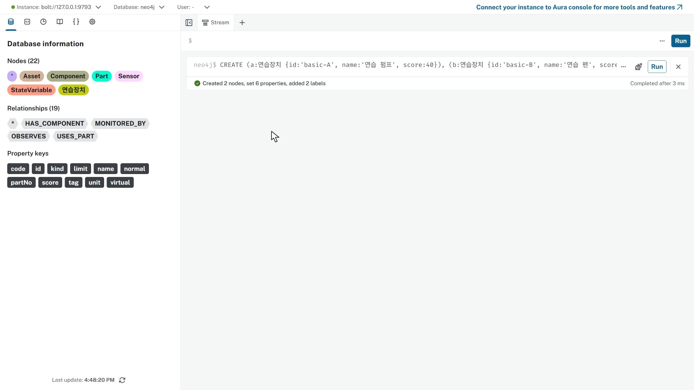
RETURN 없이 실행한 생성 결과 안내 · 누르면 크게 보기CREATE를 다시 실행하지 않고 MATCH로 만든 노드를 찾습니다. RETURN n으로 노드 자체를 받습니다.
MATCH (n:연습장치)
RETURN n;
Graph에 연습 펌프와 연습 팬 두 노드가 나타납니다. 관계는 아직 없습니다.
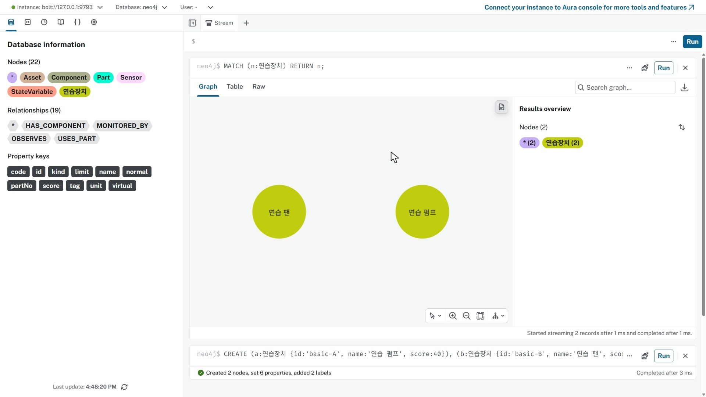
만든 두 노드를 MATCH와 RETURN으로 확인 · 누르면 크게 보기왼쪽 도구 패널을 접고 Zoom to fit을 누릅니다. 연습 펌프를 클릭해 오른쪽 Node details를 확인하세요.
레이블은 연습장치, id는 basic-A, name은 연습 펌프, score는40입니다. n은 조회 문장의 변수입니다.
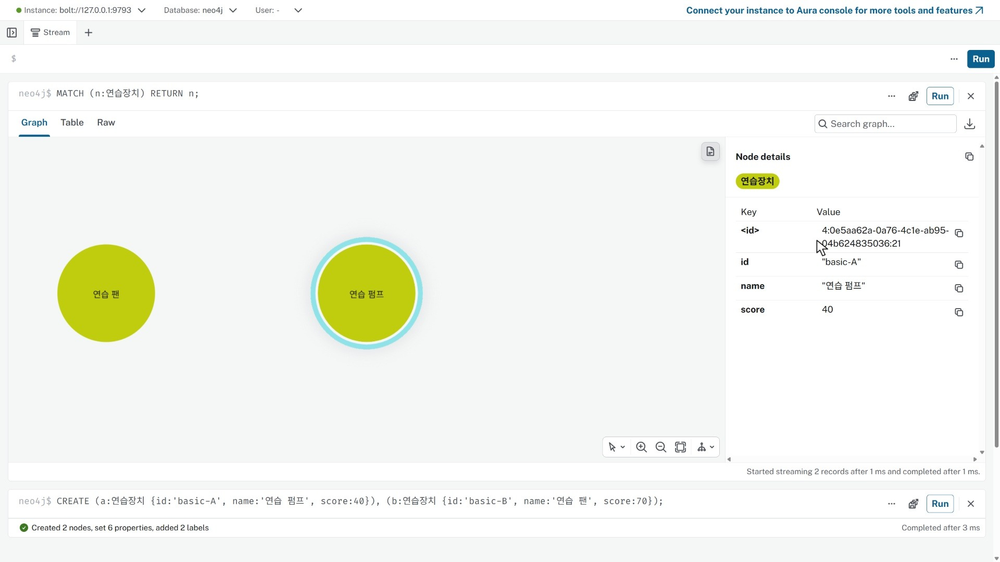
펌프 노드를 클릭해 레이블과 속성 확인 · 누르면 크게 보기03 같은 노드를 그래프와 표로 조회하기
:clear를 실행해 앞 카드를 비웁니다. 데이터는 삭제되지 않습니다. MATCH로 저장된 노드를 다시 찾으세요.
MATCH (n:연습장치)
RETURN n;
두 노드가 다시 나옵니다.
이번에는 노드 대신 이름과 점수를 반환합니다. AS는 열 이름, ORDER BY는 정렬 기준입니다.
MATCH (n:연습장치)
RETURN n.name AS name,n.score AS score
ORDER BY score;
펌프40·팬70의 두 행이 나옵니다. 노드·관계·경로는 Graph로, 속성값은 Table로 확인합니다.
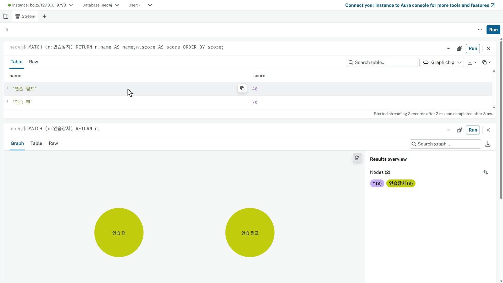
같은 노드의 이름과 점수만 표로 받기 · 누르면 크게 보기04 조건을 바꾸고 그래프 비교하기
WHERE에 score가50 이상이라는 조건을 넣습니다.
MATCH (n:연습장치)
WHERE n.score >= 50
RETURN n;
팬 한 노드만 나타납니다. 펌프는 삭제되지 않았습니다.
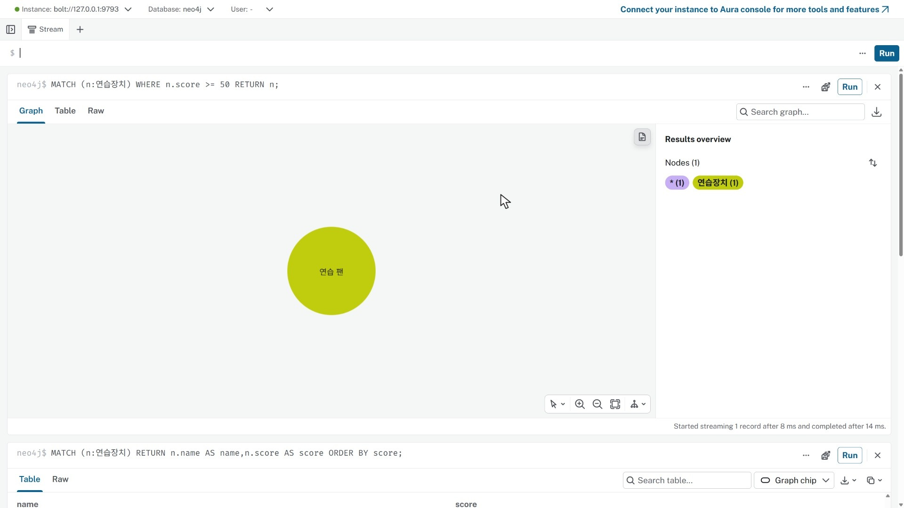
조건을 만족하는 팬만 조회 · 누르면 크게 보기50을30으로 바꿔 실행합니다.
MATCH (n:연습장치)
WHERE n.score >= 30
RETURN n;
펌프와 팬 두 노드가 다시 나타납니다.
카드를 정리하고 이름 조건을 OR로 묶은 뒤 AND로 점수 조건을 붙입니다.
MATCH (n:연습장치)
WHERE (n.name='연습 펌프' OR n.name='연습 팬')
AND n.score >= 50
RETURN n;
두 조건이 모두 맞는 팬 하나가 나옵니다.
같은 조건에서 괄호만 뺍니다.
MATCH (n:연습장치)
WHERE n.name='연습 펌프' OR n.name='연습 팬'
AND n.score >= 50
RETURN n;
펌프와 팬 두 개가 나옵니다. AND가 OR보다 먼저 묶여 펌프는 점수 조건 없이 통과합니다. 두 장치 모두에 점수 조건을 적용하려면 앞의 괄호 있는 식을 씁니다.
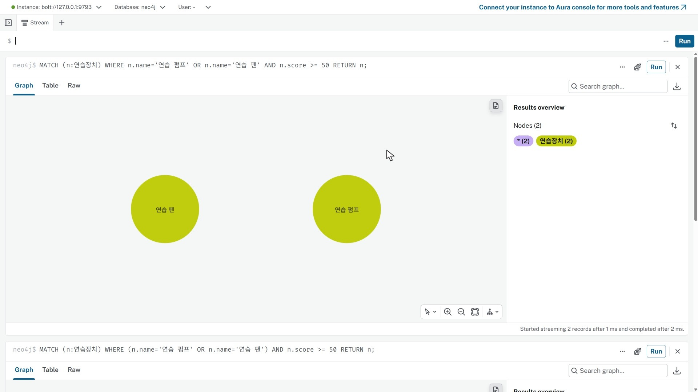
괄호 유무에 따라 달라지는 조건 범위 · 누르면 크게 보기05 센서를 만들고 관계 연결하기
:clear로 카드를 정리합니다. MERGE는 적은 패턴이 있으면 찾아 쓰고 없으면 만듭니다. SET은 속성값을 지정합니다.
MERGE (s:연습센서 {id:'basic-S1'})
SET s.name='연습 온도 센서', s.unit='℃'
RETURN s;연습 온도 센서 하나가 나타납니다.
같은 MERGE·SET을 다시 실행하고 센서 수를 확인합니다. WITH는 앞 처리에서 다음 절로 이어 줍니다.
MERGE (s:연습센서 {id:'basic-S1'})
SET s.name='연습 온도 센서', s.unit='℃'
WITH s
MATCH (n:연습센서)
RETURN count(n) AS sensor_count;sensor_count는1입니다. 한 사람이 순서대로 반복 실행한 결과이며, 동시 등록의 고유성 보장은 유일 제약과 구분합니다.
펌프와 센서를 찾아 관측 관계로 연결합니다.
MATCH (p:연습장치 {id:'basic-A'}),(s:연습센서 {id:'basic-S1'})
MERGE (p)-[r:관측]->(s)
RETURN p,r,s;노드2개·관계1개입니다. p·s는 노드 변수, r은 관계 변수, 관측은 관계 유형입니다.
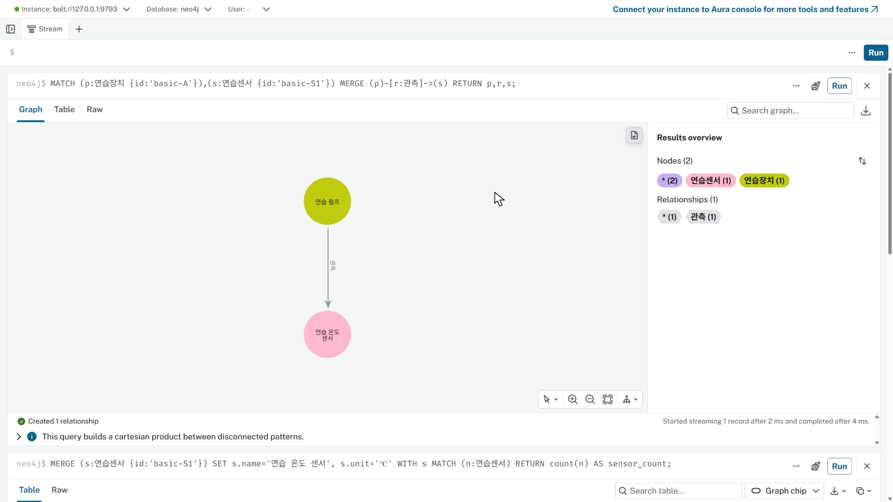
펌프와 센서를 연결한 관측 관계 · 누르면 크게 보기빈 곳을 눌러 선택을 풀고 Zoom to fit으로 맞춘 뒤 관측 선을 클릭합니다. 오른쪽 제목이 Relationship details로 바뀝니다.
06 속성을 수정하고 연결 확인하기
카드를 정리하고 id가 basic-S1인 센서의 이름만 바꿉니다.
MATCH (s:연습센서 {id:'basic-S1'})
SET s.name='연습 유온 센서'
RETURN s;노드에 표시되는 이름이 연습 유온 센서로 바뀝니다.
센서를 클릭해 속성을 확인하세요.
id는 basic-S1, unit은℃로 유지되고 name만 바뀝니다.
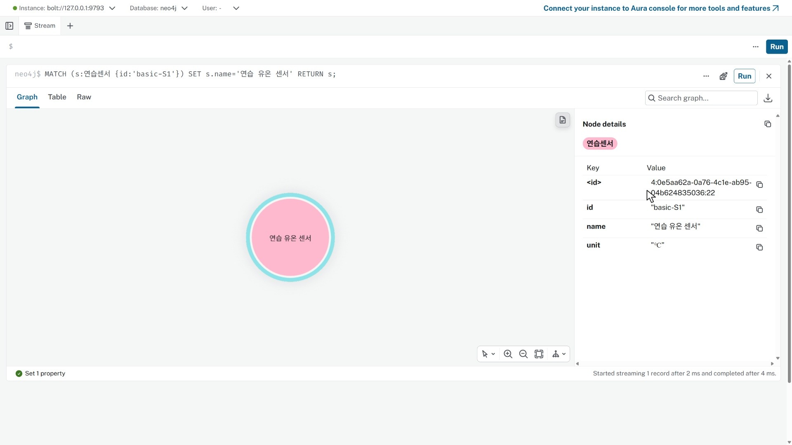
같은 센서의 이름 속성 수정 · 누르면 크게 보기경로 전체를 p에 담아 반환합니다.
MATCH p=(:연습장치 {id:'basic-A'})-[:관측]->(:연습센서 {id:'basic-S1'})
RETURN p;펌프와 이름을 바꾼 센서가 여전히 관측 관계로 연결돼 있습니다.
07 관계만 삭제하고 노드는 남기기
카드를 정리한 뒤 관측 관계를 찾아 DELETE r로 관계만 삭제합니다.
MATCH (p:연습장치 {id:'basic-A'})-[r:관측]->(s:연습센서 {id:'basic-S1'})
DELETE r
RETURN p,s;펌프·센서 두 원은 남고 연결선은 없어집니다.
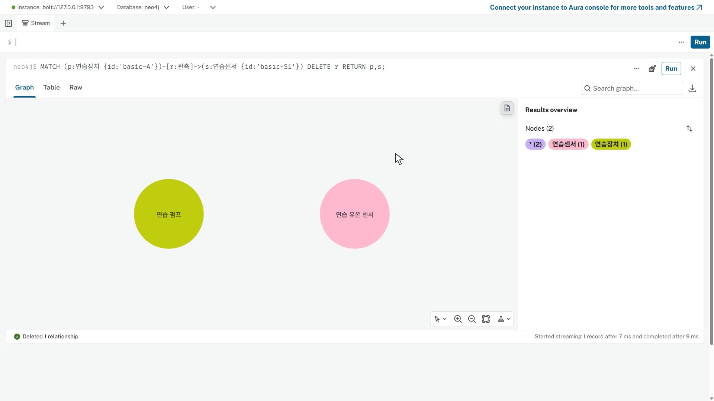
관계 삭제 후 남은 두 노드 · 누르면 크게 보기다음 삭제 방법을 비교하기 위해 남아 있는 두 노드 사이를 다시 연결합니다.
MATCH (p:연습장치 {id:'basic-A'}),(s:연습센서 {id:'basic-S1'})
MERGE (p)-[r:관측]->(s)
RETURN p,r,s;관측 선 하나가 다시 생깁니다. 새 노드를 만든 것은 아닙니다.
08 노드 삭제와 정리 확인하기
DETACH DELETE로 연습 센서와 그 연결을 함께 삭제합니다.
MATCH (s:연습센서 {id:'basic-S1'})
DETACH DELETE s
RETURN count(s) AS removed_sensors;removed_sensors는1입니다.
연습 데이터를 다시 조회합니다. 이전 카드는 실행 당시 결과이므로 새 결과를 확인하세요.
MATCH (n)
WHERE n:연습장치 OR n:연습센서
RETURN n;
펌프와 팬 두 노드만 남습니다. 센서와 관측 관계는 없습니다.
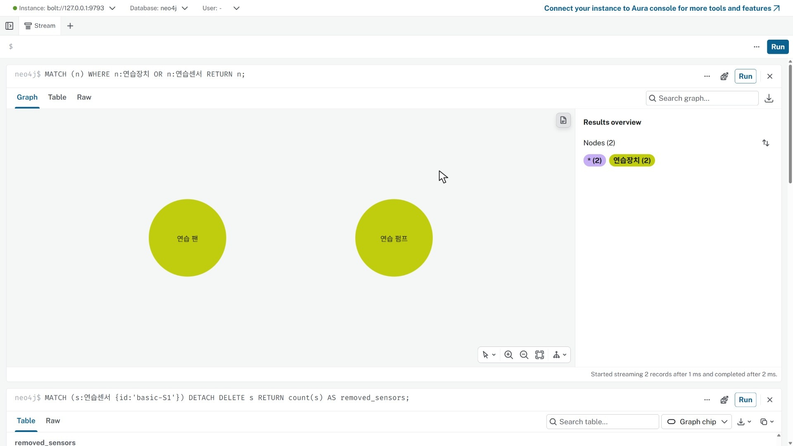
센서 삭제 뒤 새 조회로 확인한 장치 두 개 · 누르면 크게 보기관계가 없는 두 장치를 일반 DELETE로 삭제합니다.
MATCH (n:연습장치)
WHERE n.id IN ['basic-A','basic-B']
DELETE n
RETURN count(n) AS removed_devices;
removed_devices는2입니다.
연습 노드 수를 다시 셉니다.
MATCH (n)
WHERE n:연습장치 OR n:연습센서
RETURN count(n) AS remaining_practice_nodes;
remaining_practice_nodes는0입니다. 준비된 설비20노드·19관계는 유지됩니다.
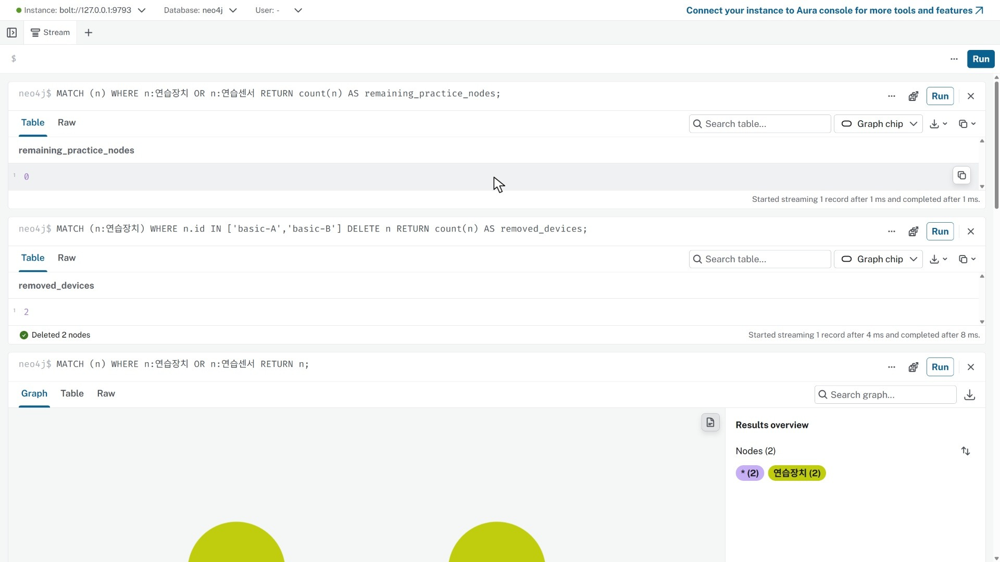
연습 데이터가0개인지 재조회 · 누르면 크게 보기:clear로 카드를 비운 뒤 아래 설비 예제로 이어갑니다. 실행 문장은 기본문법_연습.cypher에도 있습니다.
09 전체 설비 지도 읽기
Browser 위쪽 입력칸에 문장을 넣고 Run을 누르세요. HYD-01에서 한 단계부터 세 단계까지 이어지는 경로를 봅니다.
MATCH p=(a:Asset {code:'HYD-01'})-[*1..3]->(n)
RETURN p;왼쪽 패널과 그래프 상세 창을 접습니다. 그래프 아래 Select layout → Hierarchical layout을 선택하고 Zoom to fit을 누르세요.
설비 아래 구성요소가 있고, 구성요소에서 센서·부품으로 갈라집니다. 센서 아래에는 물리량이 있습니다. 전체 노드20개·관계19개입니다.
 설비 → 구성요소 → 센서·부품 → 물리량 · 누르면 크게 보기
설비 → 구성요소 → 센서·부품 → 물리량 · 누르면 크게 보기상세 창을 열고 빈 배경을 클릭한 뒤 Zoom to fit을 누르세요. 빈 배경을 끌어 위치를 옮기고 노드 위에서 휠을 올려 확대합니다. HYD-01과 오일 쿨러를 차례로 클릭해 오른쪽 Node details를 읽으세요.
HYD-01은 Asset, 오일 쿨러는 Component입니다. 쿨러의 id는 comp:cooler입니다.
 오일 쿨러 선택과 식별자·이름 확인 · 누르면 크게 보기
오일 쿨러 선택과 식별자·이름 확인 · 누르면 크게 보기10 쿨러 하나를 쿼리로 찾기
입력칸에서 :clear를 실행해 앞 카드를 정리한 뒤 다음 문장을 실행하세요. :clear는 DB 데이터를 삭제하지 않습니다.
MATCH (c:Component {id:'comp:cooler'})
RETURN c;c는 찾은 노드를 가리키는 변수, Component는 노드의 레이블입니다. id는 속성 이름, comp:cooler는 찾을 속성값입니다. 그림에 표시된 오일 쿨러는 name 속성값입니다.
쿨러 노드를 클릭해 id와 name을 확인하세요.
노드 하나가 나오며 id는 comp:cooler, 이름은 오일 쿨러입니다. 관계가 사라진 것이 아니라 이번 결과에 노드만 반환한 것입니다.
11 센서와 관계를 클릭해서 읽기
MATCH (c:Component {id:'comp:cooler'})-[r:MONITORED_BY]->(s:Sensor)
RETURN c,r,s;c와 s는 노드 변수, r은 관계 변수입니다. Component·Sensor는 노드 레이블, MONITORED_BY는 관계 유형입니다.
쿨러1개·센서2개, 노드3개·관계2개입니다.
유온 센서를 클릭해 tag·unit·virtual을 읽고 냉각 효율 노드와 비교하세요.
유온 센서는 TS1·℃·virtual=false입니다. 냉각 효율은 CE·%·virtual=true입니다.
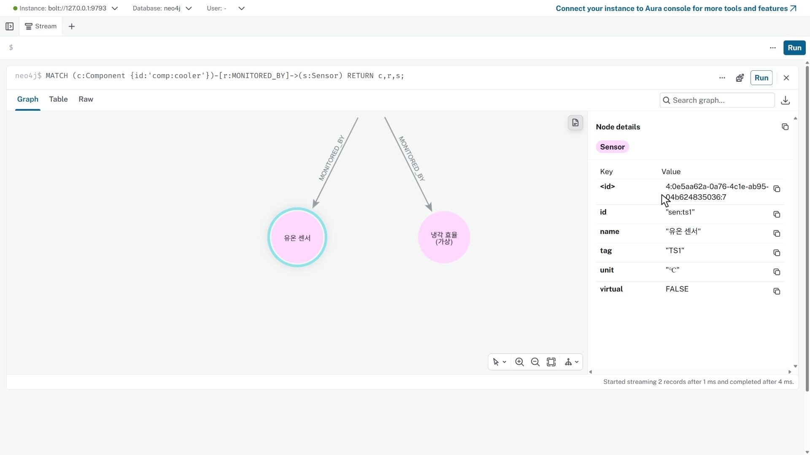
유온 센서의 태그와 단위 · 누르면 크게 보기MONITORED_BY 화살표를 클릭하세요. 오른쪽이 Relationship details로 바뀝니다. 쿨러에서 센서로 향하는 관계이며 배관의 흐름을 뜻하지 않습니다.
 노드 정보와 구별되는 관계 정보 · 누르면 크게 보기
노드 정보와 구별되는 관계 정보 · 누르면 크게 보기12 센서에서 물리량까지 따라가기
MATCH p=(a:Asset {code:'HYD-01'})-[:HAS_COMPONENT]->(c:Component)
-[:MONITORED_BY]->(s:Sensor)-[:OBSERVES]->(v:StateVariable)
RETURN p;센서가 연결된 구성요소3개에서 관측 경로5개가 이어집니다. 결과는 노드14개·관계13개입니다.
유온 센서 아래의 유온을 클릭하세요. 센서와 물리량 노드를 구분해 읽습니다.
유온은 StateVariable, id는 sv:ts1입니다. 단위 ℃, normal=48, limit=65는 등록된 기준이며 현재 측정값이 아닙니다.
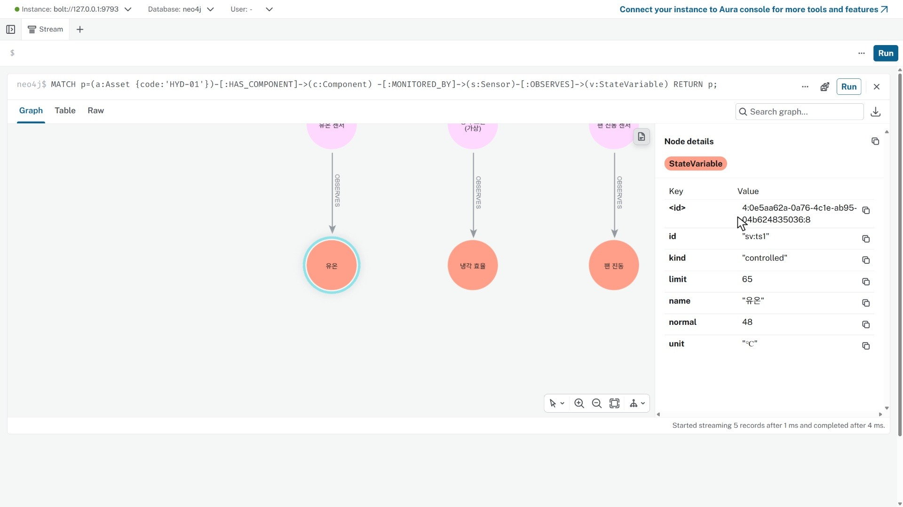
유온 노드를 클릭해 등록된 기준 확인 · 누르면 크게 보기13 질문에 맞춰 조건과 반환값 바꾸기
MATCH p=(a:Asset {code:'HYD-01'})-[:HAS_COMPONENT]->(c:Component)
-[:MONITORED_BY]->(s:Sensor)-[:OBSERVES]->(v:StateVariable)
WHERE s.tag = 'TS1'
RETURN p;HYD-01 → 오일 쿨러 → 유온 센서 → 유온의 경로만 남습니다. 노드4개·관계3개입니다. 다른 센서를 삭제한 것이 아닙니다.
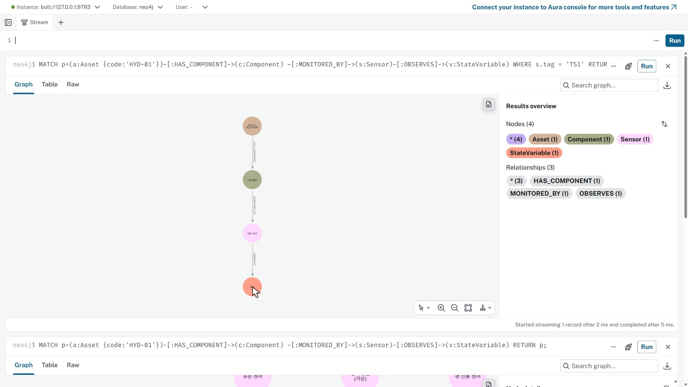
TS1 조건으로 좁힌 경로 · 누르면 크게 보기같은 경로에서 필요한 속성만 받아 표로 비교합니다.
MATCH p=(a:Asset {code:'HYD-01'})-[:HAS_COMPONENT]->(c:Component)
-[:MONITORED_BY]->(s:Sensor)-[:OBSERVES]->(v:StateVariable)
WHERE s.tag = 'TS1'
RETURN c.name AS component, s.tag AS tag, v.name AS quantity,
v.unit AS unit, v.normal AS normal, v.limit AS limit;TS1·유온·℃·48·65가 한 행에 나옵니다. 방금 클릭한 노드의 값과 대조하세요.
이번에는 전체 관측 경로에서 한계가 등록된 항목만 고릅니다.
MATCH p=(a:Asset {code:'HYD-01'})-[:HAS_COMPONENT]->(c:Component)
-[:MONITORED_BY]->(s:Sensor)-[:OBSERVES]->(v:StateVariable)
WHERE v.limit IS NOT NULL
RETURN s.tag AS tag, v.name AS quantity, v.unit AS unit, v.limit AS limit
ORDER BY tag;PS1·TS1·VS1 세 행이 나옵니다. CE·FS1은 한계가 없어 제외됐습니다. null은 0이 아닙니다.
14 교체 부품 가지 탐색하기
MATCH p=(:Asset {code:'HYD-01'})-[:HAS_COMPONENT]->(c:Component)
-[:USES_PART]->(part:Part)
RETURN p;설비 → 장치3개 → 부품3개, 노드7개·관계6개입니다.
쿨러 코어 노드를 클릭해 레이블·이름·품번을 확인하세요.
쿨러 코어는 Part이며 partNo=P-CLR-CORE입니다. 오일 쿨러 장치와 별개입니다. 등록된 사용 관계만으로 현재 재고나 교체 필요를 판단하지 않습니다.
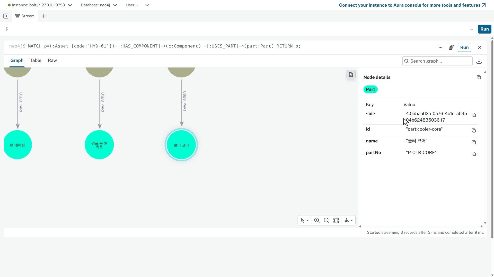
쿨러 코어의 품번 확인 · 누르면 크게 보기15 그림에서 센 수와 집계 비교하기
MATCH p=(:Asset {code:'HYD-01'})-[:HAS_COMPONENT]->(c:Component)
-[:MONITORED_BY]->(s:Sensor)
RETURN p;쿨러·주 펌프·팬 아래 센서를 직접 센 뒤 같은 연결을 집계하세요.
MATCH (:Asset {code:'HYD-01'})-[:HAS_COMPONENT]->(c:Component)
-[:MONITORED_BY]->(s:Sensor)
RETURN c.id AS component_id, c.name AS component,
collect(DISTINCT s.tag) AS tags, count(DISTINCT s) AS channels
ORDER BY channels DESC, component_id;쿨러 CE·TS1은2개, 주 펌프 FS1·PS1은2개, 팬 VS1은1개입니다. tags 목록의 개수와 channels를 비교합니다.
 목록과 개수를 함께 확인 · 누르면 크게 보기
목록과 개수를 함께 확인 · 누르면 크게 보기16 전체 지도에서 정리하고 저장하기
MATCH p=(a:Asset {code:'HYD-01'})-[*1..3]->(n)
RETURN p;예비 펌프를 클릭해 노드가 존재함을 확인하세요. 센서 집계에서 빠진 까닭을 전체 지도에서 찾아봅니다.
comp:pump-b 노드는 존재하지만 제공 예제에는 센서로 이어지는 경로가 없습니다. 표에서 빠졌다는 사실과 장치가 없다는 판단은 다릅니다.
상세 창을 접고 빈 배경을 눌러 선택을 푼 뒤 Zoom to fit을 누릅니다. 그래프 오른쪽 위 Download as PNG로 그림을 받으세요.
왼쪽 패널의 Queries → 위쪽 +로 새 쿼리 탭을 엽니다. 첫 줄은 // 설비 연결 탐색으로 적고 실행한 문장과 실제 확인 기록을 넣으세요. 탭을 닫고 왼쪽 목록에서 다시 엽니다.
작성한 문장과 확인 기록이 그대로 보입니다.
Queries의 Download all로 CSV를 받습니다. PNG와 CSV를 재부팅 전에 USB 또는 개인 클라우드에 보관하세요. 다음 포털 탐색은 별도 시작본으로 시작합니다.